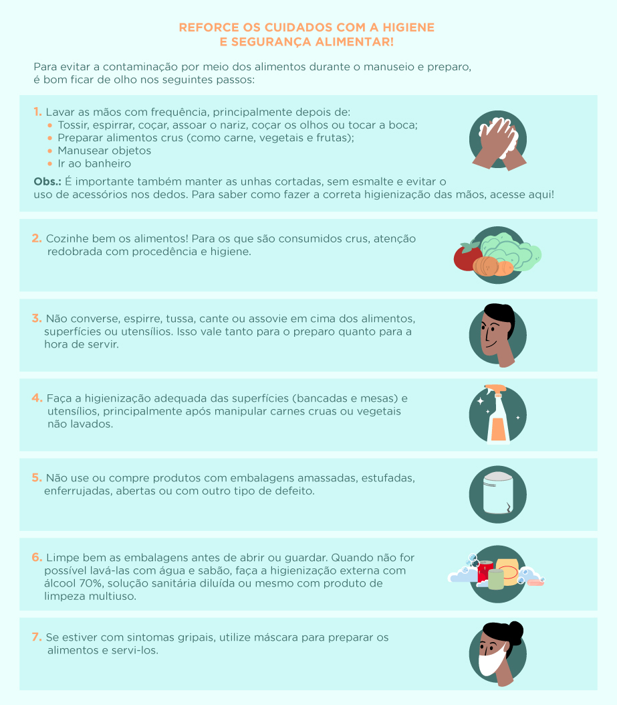
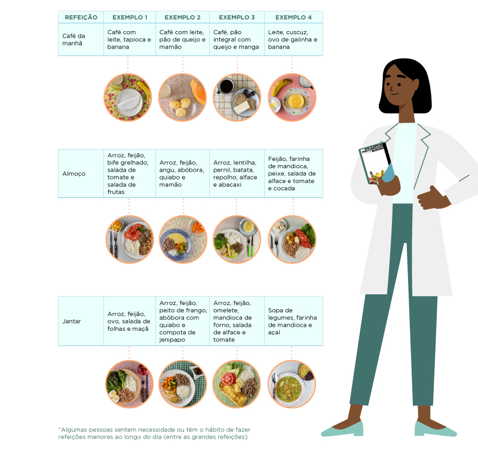
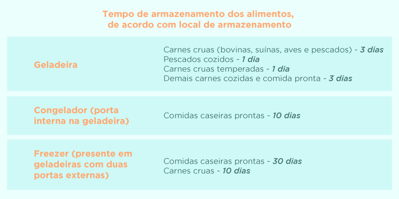

Alimentos in natura, como frutas, legumes, verduras, grãos diversos, oleaginosas, tubérculos, raízes, carnes e ovos, são saudáveis e excelentes fontes de fibras, de vitaminas, minerais e de vários compostos que são essenciais para a manutenção da saúde e a prevenção de muitas doenças. Inclusive aquelas que aumentam o risco de complicações do Coronavírus, como diabetes, hipertensão e obesidade.
Com isso, o cenário atual demanda um cuidado redobrado não só com a higiene, mas também com a alimentação. Uma vez que estar com as condições nutricionais em dia, por meio do consumo adequado de alimentos saudáveis e água potável, contribui para o fortalecimento do sistema imunológico, para a manutenção e a recuperação da saúde.
Mais uma vez, os ultraprocessados não são uma opção para a saúde. Ao enfrentar uma pandemia, você precisa estar com as defesas do seu organismo em dia e nisso esses alimentos não podem ajudar. Uma dica de ouro é evitar comprá-los e deixá-los fora do alcance das mãos. Se não tiver em casa, você não irá consumi-los.
Uma dieta baseada em ultraprocessados, ou seja, rica em calorias, sal, açúcar, aditivos químicos, corantes, conservantes e gorduras, aumenta o risco de deficiência nutricional, além de estar associada ao desenvolvimento de doenças cardiovasculares, diabetes, obesidade e outras doenças crônicas, que podem agravar o quadro dos pacientes com Coronavírus.
A recomendação, então, é investir na aquisição de alimentos in natura e minimamente processados, que podem e devem ser usados como base das preparações culinárias caseiras.
Planejar as refeições contribui para a manutenção de uma rotina alimentar adequada e saudável, já que ter sempre uma comida de verdade ao alcance ajuda a evitar os ultraprocessados. Também é importante ficar atento em relação ao consumo excessivo de alimentos, ao comportamento sedentário e ao estresse emocional.
O Guia Alimentar para a População Brasileira, editado pelo Ministério da Saúde, traz orientações bastante práticas para cada uma das principais refeições (café da manhã, almoço e jantar), oferecendo dicas variadas que levam em consideração a cultura e características alimentares regionais.
A etapa anterior começa aqui, nas compras. Antes de sair de casa e encarar o contato com outras pessoas, é importante planejar o que será comprado. Assim, você garante a disponibilidade dos alimentos e evita sair de casa com muita frequência. Mas lembre-se: nada de comprar além do necessário. Faça uma compra responsável e dê a chance para outras pessoas comprarem também.
Para ajudar na organização e planejamento, a dica é se fazer as seguintes perguntas: quais alimentos tenho em casa? Com os alimentos que tenho em casa, quais refeições consigo preparar? Quais alimentos preciso comprar para as refeições que ainda irei fazer nos próximos dias?
Priorizar alimentos da estação também é uma dica para garantir melhores preços, maior frescor e disponibilidade. Procure também fazer compras em mercados com produção local, diretamente dos agricultores ou em outros locais que comercializam variedades de alimentos in natura ou minimamente processados.
Não abra mão da distância mínima de 2 metros entre você e as outras pessoas nos estabelecimentos comerciais, além do uso de máscara. Lave bem as mãos após as compras e faça uso do álcool em gel depois de manusear os produtos comprados, objetos e equipamentos. Se possível, aproveite que os serviços de entrega estão em alta e compre frutas, verduras e legumes sem sair de casa.
Para quem é do grupo de risco, o recomendado é que alguém próximo ou membro da família faça esse trabalho de ir às compras, mantendo todos os cuidados de higiene ao retornar ou entregar as compras. Se não for possível contar com essa ajuda extra, quem está no grupo de risco deve preferir os horários com menor aglomeração de pessoas.
Uma outra maneira de evitar o desperdício e as idas desnecessárias ao mercado é cuidando do armazenamento dos alimentos. Hortaliças e preparações caseiras têm maior durabilidade quando refrigeradas ou congeladas. A medida ainda garante mais praticidade no seu dia a dia. Mas antes de tudo, faça uma higienização adequada de todos eles, inclusive dos que vêm em embalagens.
Os legumes e hortaliças duram mais tempo se for utilizada a técnica de branqueamento. Para isso, após a higienização, mergulhe-os em água fervente por 2 a 3 minutos e logo em seguida coloque-os em um recipiente com gelo. Depois congele.
A ingestão de água é importante para a hidratação. Assim, conforme indica o Guia Alimentar, é fundamental sua ingestão frequente e regular. Não vale substituir por refrescos, refrigerantes, bebidas lácteas e bebidas açucaradas de forma geral. É água mesmo! Fique atento aos primeiros sinais de sede e satisfaça imediatamente a necessidade do seu organismo.
Tendo em vista que evitar o contato próximo com outras pessoas é uma das medidas de prevenção, é natural que se pense o que fazer no caso do aleitamento materno. Mas até o momento, não há evidências de que o vírus possa ser transmitido pelas mães por meio do leite materno.
Desse modo, a Organização Mundial da Saúde (OMS) e o Ministério da Saúde orientam que a amamentação deve ser mantida, principalmente levando em consideração os benefícios dela para a saúde da criança e da mulher, uma vez que o aleitamento materno oferece proteção contra muitas doenças.
Portanto, o Ministério da Saúde recomenda que as mães continuem a amamentar seus filhos, desde que elas estejam em condições clínicas adequadas para isso. Se bater a insegurança, a dica é retirar o leite e dar para o bebê em utensílios higienizados.
É importante ressaltar que o Ministério da Saúde e a OMS recomendam a amamentação até os dois anos ou mais, sendo de forma exclusiva até os seis meses de vida da criança, ou seja, sem oferecer água, chás, sucos ou qualquer outro líquido ou alimento. Após esse período, deve ser introduzida alimentação complementar saudável conforme as recomendações do Guia Alimentar para Crianças Brasileiras Menores de Dois Anos.
Dentre os que compõem o grupo de risco, os idosos são os principais. Assim como as medidas de isolamento que evitam a infecção, é fundamental redobrar os cuidados com a alimentação deles, que deve ser saudável e adequada. Um pior estado nutricional pode deixar o organismo vulnerável e aumentar ainda mais o risco de complicações, caso haja infecção pela COVID-19.
É evidente a importância de se sentar à mesa na hora das refeições e, quando possível, de compartilhar esse momento com outras pessoas. Mas o período de pandemia não precisa representar o fim desse hábito. Continue realizando as refeições com as pessoas que moram com você, só não compartilhe utensílios como copos, pratos, talheres, xícaras.
Aproveite para envolver toda a família, que mora na mesma casa, nas atividades de planejar as refeições, preparar, servir os alimentos e cuidar da limpeza dos utensílios. Para incrementar esse momento de convívio e deixar as refeições ainda mais saudáveis, que tal convocar a família para a criação de uma horta, mesmo que pequena? Essa é uma maneira de obter, a baixo custo, uma quantidade razoável de alimentos saudáveis, como frutas, legumes e verduras, muito saborosos.
16 Abril 2020